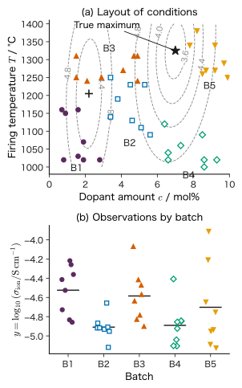
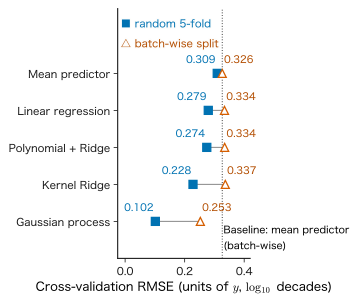
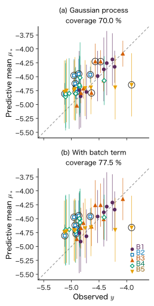
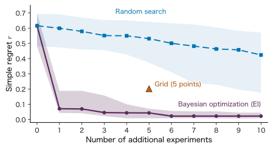

Chapter 28A Comprehensive Exercise in Materials Search — From Checking the Data to Proposing Additional Experiments
- From the 40 experimental data points at hand, can we propose the five conditions to try next, together with the reasons for choosing them?
- How far can we trust that proposal, and the “prediction error” and “prediction width” that accompany it?
- Even with the same data and the same model, the error can look half as large depending on how the data are split and in what order the preprocessing is done. What should we check so as not to fool ourselves?
Suppose that 40 data points on an oxide solid electrolyte have accumulated in the laboratory. They are the ionic conductivities of samples fired with varying dopant amount and firing temperature. A senior colleague says, “I fitted a Gaussian process and the error was 0.1 orders of magnitude. Just fire the condition with the highest prediction next.” However, the samples were made in five syntheses (batches), and the conditions tried in each batch are biased. Does the figure of 0.1 orders of magnitude also apply to the next sample, fired in a new batch?
This chapter is a comprehensive exercise that connects the tools learned in the previous chapters into one continuous piece of work. We fix one set of synthetic data for teaching purposes and proceed in the following order: checking the data (units, missing values, duplicates, outliers, batch bias), designing the split (checking for leakage), the baseline model, comparing models (polynomial + ridge, kernel ridge, Gaussian process), evaluation and uncertainty (coverage of the prediction interval), proposing five additional points by Bayesian optimization, failure cases, and a reproducible report. All the numbers and tables in the text were obtained by running the published script (Python, which runs with only numpy and scipy), and the figures were drawn from its output, so readers can reproduce the same numbers on their own computers.
- You can check tabular materials data in the order of units, range, missing values, duplicates, outliers, and batch bias, and record what you corrected.
- You can design the split to match how the data were collected (the batches), and show numerically how optimistic an error a random split gives.
- You can take the model that answers with the mean and linear regression as baselines, and judge a model by whether it does better than they do.
- You can use nested cross-validation to separate the choice of hyperparameters from the evaluation of performance.
- You can examine the coverage of the 95 % prediction interval of a Gaussian process, and derive and use a formula that puts the batch offsets into the covariance.
- You can select additional experimental conditions sequentially by expected improvement (EI) and explain the reasons with numbers. You can compare the quality of methods by the median and interquartile range over many seeds.
- You can show numerically what preprocessing leakage, a faulty split, extrapolation, and underestimated noise each cause, and say how to fix them.
- You can report results in a form that others can reproduce (seed, version, split, hyperparameters).
Sections for the introductory route: This is a chapter of the detailed route. On the introductory route, read only 28.11 (Summary).
28.1 Problem Setting for Materials Search and Checking the DataDetailed Route
28.1.1 Overview of the work
The work in this chapter consists of the seven stages in Figure 28.1. The order is what matters. For example, if standardization or outlier removal is applied to the whole data set before the split (stage 2), information from the data that are supposed to be used for evaluation flows into training (Chapter 6, Section 6.7). Likewise, a proposal for additional experiments (stage 6) is not a sound basis unless we have first confirmed in the evaluation (stage 5) that the prediction width can be trusted.
28.1.2 Data and notation
The subject is a fictitious oxide solid electrolyte. In many solid electrolytes, ions of a different valence are added to create defects such as vacancies, which makes the ions move more easily. If the dopant amount is too small, there are too few mobile defects, and if it is too large, the defects bind to each other and become less mobile, so the conductivity can have a maximum as a function of the dopant amount. The firing temperature changes the conductivity through densification (the reduction of pores), grain growth, and the loss of volatile components, so there is an optimal temperature, and it can change with the composition. The data of this chapter are obtained by taking the data C of Chapters 12 and 13 (one-dimensional, in the dopant amount only) and making them two-dimensional by adding this temperature dependence.
We fix the notation. In the data C of Chapters 12 and 13 the dopant amount was written $x$, but in this chapter, to distinguish it from the input vector $\bm{x}$, we write the dopant amount as $c$ (mol%).
- The dopant amount is $c\in[0,10]$ mol% and the firing temperature is $T\in[1000,1400]$ °C. The input vector is $\bm{x}=(c,T)^{\tp}\in\R^{2}$ ($D=2$).
- The target value is $y=\log_{10}(\sigma_{\mathrm{ion}}/\mathrm{S\,cm^{-1}})$ (dimensionless; the common logarithm of the conductivity $\sigma_{\mathrm{ion}}$ measured in S cm$^{-1}$). A difference of 0.1 in $y$ corresponds to a conductivity ratio of $10^{0.1}=1.26$. Below, we sometimes call the unit of $y$ an “order of magnitude.”
- The data are $\data=\{(\bm{x}_n,y_n)\}_{n=1}^{N}$ with $N=40$. We write the number of the batch in which sample $n$ was synthesized as $j(n)\in\{1,\dots,5\}$.
The data are synthetic data for teaching purposes generated by the following equations, and are not data on any real material. The true function (a function that is unknown in actual research) is
\begin{equation} \begin{aligned} g(c,T)&=-5.0+A(c)\,\psi(c,T),\\ A(c)&=1.0\,e^{-(c-2.2)^{2}/(2\cdot0.7^{2})}\\ &\quad+1.6\,e^{-(c-7.0)^{2}/(2\cdot1.1^{2})},\\ \psi(c,T)&=e^{-(T-T_{\mathrm{opt}}(c))^{2}/(2\cdot150^{2})},\\ T_{\mathrm{opt}}(c)&=1150+25c \end{aligned} \label{eq:28-true} \end{equation}($T$ and $T_{\mathrm{opt}}$ are in °C and $c$ is in mol%). Here $A(c)$ is exactly the dopant-amount dependence of the data C, and $\psi(c,T)$ is a peak of width 150 °C around the optimal temperature $T_{\mathrm{opt}}(c)$ ($0\lt\psi\le1$); the optimal temperature rises by 25 °C per 1 mol% of dopant. At the top of the peak, $T=T_{\mathrm{opt}}(c)$, we have $\psi=1$, so the global maximum is $g=-5.0+1.6=-3.400$ (at $c=7.0$ mol%, $T=1325$ °C) and the local maximum is $g=-4.000$ (at $c=2.2$ mol%, $T=1205$ °C) (apart from a shift of about 0.0001 caused by the overlap of the tails of the two peaks). The observed values are
\begin{equation} \begin{aligned} y_n&=g(\bm{x}_n)+u_{j(n)}+\varepsilon_n,\\ u_j&\sim\Normal(0,\,0.08^{2}),\\ \varepsilon_n&\sim\Normal(0,\,0.05^{2}) \end{aligned} \label{eq:28-obs} \end{equation}Here $u_j$ is an offset common to batch $j$ (a lump of factors that cannot be expressed by the recorded inputs, such as the lot of raw material, the calibration of the furnace temperature, and differences in atmosphere), and $\varepsilon_n$ is the measurement noise of each sample; all of them are assumed to be independent of one another. There are five batches of eight points each, and the range of conditions tried is biased differently in each batch (Figure 28.2(a)). $c$ was rounded to units of 0.1 mol% and $T$ to units of 10 °C. The random numbers come from numpy.random.default_rng(20261112), and even the order of the draws is written in the generation script.
The data and the script are published as the following three files.
- ch28_capstone_data.csv: the data (the columns are
sample_id, batch, c_molpct, T_C, y_log10_sigma). - ch28_make_data.py: the script that generates the data from the equations above.
- ch28_capstone.py: the script that performs all the computations of this chapter (it uses only numpy and scipy; the numbers in the text were obtained with Python 3.12.13, numpy 2.5.4, and scipy 1.18.1).
How to run: put the three files in the same folder (ch28_capstone.py reads how to build the true function and the data from ch28_make_data.py in the same folder), and run python ch28_capstone.py in that folder. The numbers of Sections 28.1–28.7 are displayed in order (about two minutes, including the comparison over many seeds). With --quick you can try it with the number of repetitions reduced to 20, and with --json name.json the results are also saved as JSON. python ch28_make_data.py regenerates the CSV (the contents are the same because the seed is the same). The figures were drawn from the output of this script with matplotlib (the plotting part is not included in the script).
In the CSV we have deliberately put in three defects for checking practice (they are written at the top of the generation script). Below, we check the data as if we did not know about them.
28.1.3 Order of the checks
Procedure: Checking tabular data
- Units and meaning: what quantity each column is and in what unit (°C or K, mol% or wt%, $\sigma$ or $\log_{10}\sigma$).
- Range: whether the values fall within the range planned for the experiment and the physically possible range.
- Missing values: whether there are blank cells. What is the reason for a blank (a failed measurement, or not measured)?
- Duplicates: whether the same sample has been entered twice. Distinguish this from repeated measurements under the same condition (these are not duplicates but important information).
- Outliers: whether there are values that are extreme compared with the others. Do not remove a value merely because it is extreme. Remove it only when a reason, such as a recording error, is known.
- Group structure: groupings such as batches, samples, and measurement dates, and the bias of conditions within each grouping.
Keep a record of what was corrected, without overwriting the original file.
The script function inspect_and_clean made the checks in this order, and the result is shown in Table 28.1.
| Check | What was found | Action |
|---|---|---|
| Duplicates | The row for B2-05 appears once more at the end (with identical content) | Remove the second occurrence |
| Missing values | $y$ of B3-09 is blank (only batch 3 has a ninth sample) | Remove it (batch 3 then has eight points) |
| Range | $T=1583$ for B3-02 (the plan was 1000–1400 °C) | Judged to have been recorded in K and corrected to $1583-273=1310$ °C |
| Rule of thumb for outliers | The median of $y$ is $-4.838$, the MAD is $0.185$, and the maximum absolute robust $z$ is 3.37 (B5-08, $y=-3.912$) | Keep it, because there is no evidence of a recording error |
As the rule of thumb for outliers we used the median and the MAD (median absolute deviation: the median of the absolute deviations from the median), not the mean and the standard deviation. The robust $z$ is $(y_n-\mathrm{median})/(1.4826\times\mathrm{MAD})$, and the factor 1.4826 is the number that converts the MAD into a standard deviation for a Gaussian distribution. The mean and the standard deviation are themselves pulled by the outliers, so they are blunt tools for finding outliers. B5-08 has a large robust $z$ of 3.37, but this may be because a condition of high conductivity was measured, and it is exactly the kind of “good sample” we are looking for. If we removed it here, we would be throwing away a clue for the search ourselves.
Table 28.2 shows a batch-by-batch summary of the 40 points after the checks, and Figure 28.2 shows the scatter plot.
| Batch | $c$ / mol% | $T$ / °C | Mean of $y$ | Maximum of $y$ |
|---|---|---|---|---|
| B1 | 0.7–2.8 | 1020–1160 | $-4.525$ | $-4.218$ |
| B2 | 3.4–5.6 | 1090–1250 | $-4.909$ | $-4.658$ |
| B3 | 1.5–4.9 | 1240–1310 | $-4.585$ | $-4.070$ |
| B4 | 6.4–9.3 | 1000–1120 | $-4.891$ | $-4.408$ |
| B5 | 7.8–9.9 | 1250–1380 | $-4.702$ | $-3.912$ |

Figure 28.2 shows the following. First, batches and conditions are strongly tied together. B4 is low-temperature and high-additive, B5 is high-temperature and high-additive, and so on: each batch measures only a part of the space of conditions. For this reason it is difficult to separate, from the data alone, whether a high $y$ at some condition is “thanks to the condition” or “thanks to the offset $u_j$ of that batch” (confounding; Chapter 6, Section 6.11). Second, there is not a single point near the true maximum ($c\approx7$ mol%, $T\approx1300$ °C). The best observed value $-3.912$ is B5-08 ($c=7.8$ mol%, $T=1340$ °C), and the true value at that condition is $g=-3.772$ (the difference from the true maximum is 0.372; this B5 was a batch with a negative offset $u_5$).
Example 28.1: Checking units and converting to conductivity
(1) Regard $T=1583$ of B3-02 as recorded in K. What is it in °C? Give the answer both for the case where 0 °C may be taken as 273 K (the treatment in Table 28.1) and for the case where it is taken as 273.15 K, and state why the script subtracted 273. (2) Convert the best observed value $y=-3.912$ and the true maximum $y=-3.400$ into the conductivity $\sigma_{\mathrm{ion}}$ (S cm$^{-1}$), and find their ratio. (3) If the 41 rows are divided into 5 folds without removing the duplicated rows, what is the approximate probability that the two rows of B2-05 fall into different folds? What happens if they fall into different folds?
Solution. (1) $1583-273=1310$ °C, and $1583-273.15=1309.85$ °C. The temperatures in this data set are recorded rounded to units of 10 °C (all the other 39 points are multiples of 10), so if we assume the value was also rounded to an integer when written in K, subtracting 273 to get 1310 °C matches the form of the records. Either way the difference is less than 1 °C, and its effect on the analysis is negligible.
(2) Since $\sigma_{\mathrm{ion}}=10^{y}\ \mathrm{S\,cm^{-1}}$, we have $10^{-3.912}=1.22\times10^{-4}\ \mathrm{S\,cm^{-1}}$ and $10^{-3.400}=3.98\times10^{-4}\ \mathrm{S\,cm^{-1}}$. The ratio is $10^{-3.400-(-3.912)}=10^{0.512}=3.25$ times. A difference of 0.5 in the logarithm corresponds to a factor of about 3 in conductivity.
(3) When one of the rows falls into some fold, the other row falls into one of the positions among the remaining 40 rows. The number of remaining seats in the same fold is about 8, so the probability of falling into the same fold is about $8/40=0.2$, and the probability of falling into different folds is about $0.8$. If they fall into different folds, the training data contain a row exactly identical to the row being validated, and the prediction for that row is correct merely by “answering the value it remembers.” The validation error looks small, but it has nothing to do with the predictive power for a new sample (Chapter 6, Section 6.7).
28.2 Designing the Split — Do Not Straddle BatchesDetailed Route
28.2.1 Decide first what you want to predict
The unit of the split is determined by “what is new” in the situation where the model will be used (Chapter 6, Section 6.8). The goal of this chapter is to predict the conductivity of the sample fired in the next batch and to decide which condition to try next. Nobody has yet seen the offset $u_j$ of the next batch. Therefore the honest way is to carry out the evaluation also on “a batch different from the batches used for training.”
In this chapter we use two ways of splitting side by side.
- Random 5 folds: Permute the 40 points with random numbers and divide them into 5 groups of 8 points each (seed 20261112). In each round, train on 32 points and validate on 8 points.
- Batch-wise split (leave-one-batch-out; this is the leave-one-group-out of Definition 6.7 in Chapter 6, Section 6.8, with the groups taken to be the batches): 5 folds in which one whole batch at a time is set aside for validation. In each round, train on the 4 batches (32 points) and validate on the remaining one batch (8 points).
Both train on 32 points and validate on 8 points. The only difference is whether companions from the same batch as the validated point are in the training data. In the random 5-fold split, for each of the 8 validated points, there are on average about 6 companions from the same batch in the training data.
28.2.2 The batch offset sets a lower bound on the error
No matter how good a model is, it cannot predict the offset $u_j$ of a batch it has not yet seen. Even a model that knows the true function $g$ perfectly has, for an observed value in a new batch, the error $y-g=u_j+\varepsilon$, whose variance is $0.08^{2}+0.05^{2}$. Hence the lower bound of the RMSE on a new batch is
$$ \sqrt{0.08^{2}+0.05^{2}}=\sqrt{0.0089}=0.094 $$On the other hand, if companions from the same batch are in the training data, the model can to some extent “remember” the offset $u_j$ through the values of those companions, and the error can become smaller than this lower bound (Example 28.2). If the error of the random split falls below this 0.094, this is a rule of thumb that it cannot reflect predictive power for a new batch.
Example 28.2: The lower bound of the error when companions are present
Consider a model that knows the true function $g$ and, in addition, has $n$ observations from the same batch as the validated point in its training data. This model estimates the batch offset as $\hat{u}=\frac1n\sum_{i=1}^{n}(y_i-g(\bm{x}_i))$ and predicts $\hat{y}=g(\bm{x})+\hat{u}$. (1) Find the expectation of the squared error at the validated point. (2) Find the RMSE for $n=6$ and $n=7$, and compare it with the lower bound 0.094 for a new batch.
Solution. (1) For the $n$ training points, $y_i-g(\bm{x}_i)=u+\varepsilon_i$, so $\hat{u}=u+\bar{\varepsilon}$ (where $\bar{\varepsilon}=\frac1n\sum_i\varepsilon_i$). Since the validated point is $y=g(\bm{x})+u+\varepsilon$,
$$ \begin{aligned} y-\hat{y}&=(g+u+\varepsilon)-(g+u+\bar{\varepsilon})\\ &=\varepsilon-\bar{\varepsilon}. \end{aligned} $$The $u$ cancels and disappears. Since $\varepsilon$ and $\bar{\varepsilon}$ are independent and $\Var[\bar{\varepsilon}]=\sigma^{2}/n$ (Chapter 2, Section 2.8), the expectation of the squared error is $\sigma^{2}+\sigma^{2}/n=\sigma^{2}(1+1/n)$ (with $\sigma=0.05$).
(2) For $n=6$: $0.05\sqrt{1+1/6}=0.054$. For $n=7$: $0.05\sqrt{1+1/7}=0.053$. These are about 0.57 times the lower bound 0.094 for a new batch. Merely whether companions from the same batch are present roughly halves the lower bound of the error.
28.2.3 A checklist for leakage
What to verify before and after the split is summarized in Table 28.3. It applies the contents of Sections 6.7–6.8 of Chapter 6 to the present subject.
| Question | Answer and treatment in this chapter |
|---|---|
| Do the same sample or duplicates straddle training and validation? | Duplicate rows were removed (Table 28.1). One row per sample |
| Does the same batch straddle training and validation? | The honest evaluation is the batch-wise split. The random split is used only for comparison |
| Were the quantities used in preprocessing (standardization, imputation, removal of outliers) determined from the training data alone? | The mean and standard deviation for standardization are computed from the training data of each round alone (Section 28.4). No imputation is done, and rows with missing values were removed |
| Were the hyperparameters chosen by looking at the validation data? | Nested cross-validation: choose inside (within the training data only) and evaluate outside |
| Does the input contain a quantity that is not available at the time of prediction? | The inputs are only $c$ and $T$, which are fixed at planning time. Quantities such as the density after sintering are not included |
| Has the data used for testing been looked at many times? | In this chapter the final judgment is made by the results of additional experiments (Section 28.6). The evaluation figures are those of cross-validation |
28.3 Baseline Model — It Is Meaningless Unless We Beat ThisDetailed Route
28.3.1 Two baselines
Before building up a model, we measure the error of the simplest way of answering. This gives a baseline: “unless we do better than this, there is no point in using the model.”
- The model that answers with the mean: without looking at the input, it always answers with the mean $\bar{y}_{\mathrm{tr}}$ of $y$ over the training data. The coefficient of determination $R^{2}$ is a scale on which this model is 0 (Chapter 6, Section 6.10).
- Linear regression: fit $f(\bm{x};\bm{w})=w_0+w_1\tilde{c}+w_2\tilde{T}$ by least squares ($\tilde{c},\tilde{T}$ are the standardized inputs defined in Section 28.4).
For evaluation we use MAE and RMSE (defined in Chapter 6, Section 6.10: $\mathrm{MAE}=\frac1N\sum_n\abs{y_n-\hat{y}_n}$, $\mathrm{RMSE}=\sqrt{\frac1N\sum_n(y_n-\hat{y}_n)^{2}}$). In cross-validation, we collect the predicted values $\hat{y}_n$ from the five validations for all 40 points, and then compute MAE and RMSE over all 40 points together. The unit is the same as that of $y$, namely “orders of magnitude.”
The results for the baseline models (the top two rows of Table 28.4) are, for the batch-wise split, an RMSE of 0.326 for the mean and 0.334 for linear regression. Linear regression is worse than the mean. This is because $y$ depends on both $c$ and $T$ in a peaked way, so it cannot be represented by a plane, and moreover the range of conditions in a new batch tends to lie outside the range of the training data (Figure 28.2(a)), so predictions that extend the plane outward miss. On the other hand, with the random 5-fold split, linear regression (0.279) is better than the mean (0.309). Depending on how the data are split, even the ranking of the baseline models is reversed.
Example 28.3: Computing the error of the mean-answering model by hand
When B5 is held out for validation in the batch-wise split, the mean of $y$ over the training data (the 32 points of B1–B4) is $-4.727$. For the four samples of B5, B5-01, B5-02, B5-08, and B5-04, with observed values $y=(-4.647,\ -4.935,\ -3.912,\ -4.209)$, find the MAE and RMSE when we answer with the mean $-4.73$ (the value rounded to two decimal places).
Solution. The errors $y-\hat{y}$ are
$$ \begin{aligned} &-4.647+4.73=0.083,\\ &-4.935+4.73=-0.205,\\ &-3.912+4.73=0.818,\\ &-4.209+4.73=0.521. \end{aligned} $$The MAE is $(0.083+0.205+0.818+0.521)/4$ $=1.627/4=0.407$. The sum of squares is $0.00689+0.04203$ $+0.66912+0.27144=0.98948$, so the RMSE is $\sqrt{0.98948/4}$ $=\sqrt{0.24737}=0.497$. The mean cannot explain the high value of B5 ($-3.912$), and the RMSE is considerably larger than the MAE (because large errors are weighted strongly by squaring).
28.4 Growing the Model — Polynomial, Kernel Ridge, and Gaussian ProcessDetailed Route
28.4.1 Standardize using the training data only
Since $c$ (0–10 mol%) and $T$ (1000–1400 °C) are quantities of different orders of magnitude, feeding them as they are into a distance or a polynomial would let only $T$ take effect. We therefore compute the mean and standard deviation from the training data only in each fold, and standardize as
\begin{equation} \tilde{c}=\frac{c-\bar{c}_{\mathrm{tr}}}{s_{c,\mathrm{tr}}},\qquad \tilde{T}=\frac{T-\bar{T}_{\mathrm{tr}}}{s_{T,\mathrm{tr}}} \label{eq:28-std} \end{equation}($s$ is the standard deviation with division by $N$). To the validation data we only apply these four numbers obtained from the training data. We write the standardized input as $\tilde{\bm{x}}=(\tilde{c},\tilde{T})^{\tp}$. Over all 40 points, $\bar{c}=5.19$ mol%, $s_c=2.91$ mol%, $\bar{T}=1173.75$ °C, and $s_T=111.8$ °C.
Example 28.4: Standardizing with quantities from the training data
Suppose the training data consist of four points with temperatures $(1020,\ 1150,\ 1250,\ 1310)$ °C, and the validation data consist of one point at $1380$ °C. (1) Find the mean and standard deviation (dividing by $N$) of the training data, and compute $\tilde{T}$ for the validation point. (2) If we mistakenly compute the mean and standard deviation from all five points, what is $\tilde{T}$ of the validation point? What has leaked?
Solution. (1) The mean is $(1020+1150+1250+1310)/4$ $=4730/4=1182.5$ °C. The deviations are $(-162.5,\ -32.5,\ 67.5,\ 127.5)$, their squares are $(26406.25,\ 1056.25,$ $4556.25,\ 16256.25)$, and the sum is $48275$. The variance is $48275/4=12068.75$, and the standard deviation is $\sqrt{12068.75}=109.86$ °C. For the validation point, $\tilde{T}=(1380-1182.5)/109.86=1.798$.
(2) The mean of the five points is $(4730+1380)/5=1222.0$ °C, the sum of squared deviations is $(-202)^{2}+(-72)^{2}+28^{2}$ $+88^{2}+158^{2}=79480$, and the standard deviation is $\sqrt{79480/5}=126.08$ °C. For the validation point, $\tilde{T}=(1380-1222)/126.08=1.253$. The value 1380 °C of the validation point has entered the training-side scale through the mean and the standard deviation, so the degree of extrapolation, “the validation point is 1.8 standard deviations away from the training range,” appears shrunk to “1.25 standard deviations.”
28.4.2 Three models
(1) Polynomial + ridge. We take all monomials $\tilde{c}^{a}\tilde{T}^{b}$ of degree at most $d$ ($a+b\le d$) as basis functions. The number of basis functions is $M=(d+1)(d+2)/2$, and for $d=2$ we have $M=6$ ($1,\tilde{c},\tilde{T},\tilde{c}^{2},\tilde{c}\tilde{T},\tilde{T}^{2}$). Let the design matrix be $\bm{\Phi}\in\R^{N\times M}$, and take the loss of ridge regression in Chapter 8, Section 8.6, with only the intercept $w_0$ taken out of the penalty:
\begin{equation} \begin{aligned} L(\bm{w})&=\frac12\norm{\bm{y}-\bm{\Phi}\bm{w}}^{2}\\ &\quad+\frac{\lambda}{2}\sum_{j=1}^{M-1}w_j^{2} \end{aligned} \label{eq:28-ridge} \end{equation}We minimize this ($\bm{w}\in\R^{M}$, and $w_0$ is the intercept). Setting the gradient to 0 gives $(\bm{\Phi}^{\tp}\bm{\Phi}+\lambda\bm{P})\bm{w}$ $=\bm{\Phi}^{\tp}\bm{y}$ ($\bm{P}=\diag(0,1,\dots,1)\in\R^{M\times M}$), which we solve as a system of linear equations. The hyperparameters are $d\in\{1,2,3,4\}$ and $\lambda\in\{10^{-3},10^{-2},10^{-1},1,10,100\}$.
(2) Kernel ridge regression (Chapter 10, Section 10.6). With the RBF kernel $k(\tilde{\bm{x}},\tilde{\bm{x}}')$ $=\exp\bigl(-\norm{\tilde{\bm{x}}-\tilde{\bm{x}}'}^{2}/(2\ell^{2})\bigr)$ ($\sigma_f=1$), we fit to the values from which the training mean $\bar{y}_{\mathrm{tr}}$ has been subtracted:
\begin{equation} \begin{aligned} \bm{a}&=(\bm{K}+\lambda\bm{I})^{-1}\\ &\quad\times(\bm{y}-\bar{y}_{\mathrm{tr}}\bm{1}),\\ f(\tilde{\bm{x}}_*)&=\bar{y}_{\mathrm{tr}}+\bm{k}_*^{\tp}\bm{a} \end{aligned} \label{eq:28-krr} \end{equation}($\bm{K}\in\R^{N\times N}$, $\bm{k}_*\in\R^{N}$, $\bm{1}\in\R^{N}$. We do not form the inverse matrix, but solve using the Cholesky decomposition). The hyperparameters are $\ell\in\{0.3,0.5,1,2\}$ (in standardized units) and $\lambda\in\{10^{-3},\dots,10\}$.
(3) Gaussian process regression (Chapter 12). We take the mean function to be the constant $m=\bar{y}_{\mathrm{tr}}$ and use an RBF kernel with a separate length scale for each component of the input (the ARD kernel; automatic relevance determination)
\begin{equation} \begin{aligned} &k(\tilde{\bm{x}},\tilde{\bm{x}}')\\ &=\sigma_f^{2}\exp\!\Bigl[-\frac{(\tilde{c}-\tilde{c}')^{2}}{2\ell_c^{2}}\\ &\qquad\qquad\ \ -\frac{(\tilde{T}-\tilde{T}')^{2}}{2\ell_T^{2}}\Bigr] \end{aligned} \label{eq:28-ard} \end{equation}If $\ell_c=\ell_T$, this reduces to the RBF kernel of Chapter 12. The assumption is that the dopant amount and the temperature may differ in “how far apart two points must be for the correlation to vanish.” With $\bm{K}_y=\bm{K}+\sigma^{2}\bm{I}$, the prediction is given by the formulas of Chapter 12, Section 12.4,
\begin{equation} \begin{aligned} \mu_*&=m+\bm{k}_*^{\tp}\bm{K}_y^{-1}(\bm{y}-m\bm{1}),\\ \sigma_*^{2}&=k(\tilde{\bm{x}}_*,\tilde{\bm{x}}_*)-\bm{k}_*^{\tp}\bm{K}_y^{-1}\bm{k}_* \end{aligned} \label{eq:28-gp} \end{equation}Here $\sigma_*^{2}$ is the predictive variance of the latent function (the true function), and the predictive variance of the next single observed value is $\sigma_*^{2}+\sigma^{2}$. The hyperparameters $\bm{\theta}=(\ell_c,\ell_T,\sigma_f,\sigma)$ are determined by maximizing the log marginal likelihood on the training data (Chapter 12, Section 12.7). We search on a logarithmic scale with the L-BFGS-B algorithm, change the starting point four times, and take the best result.
Fitting to all 40 points gives $\ell_c=0.336$, $\ell_T=1.834$ (in standardized units; in the original units, $0.336\times2.91=0.98$ mol% and $1.834\times111.8=205$ °C), $\sigma_f=0.391$, and $\sigma=0.056$. The length scales are close to the width of the peak in dopant amount (0.7–1.1 mol%) and the width of the peak in temperature (150 °C). The value $\sigma=0.056$ is close to the measurement noise of 0.05, and is much smaller than $0.094$, which includes the batch offset of 0.08. That is, the batch offset is not treated as independent noise but is absorbed into the function $f$ (this becomes a problem in Section 28.5).
28.4.3 Select with nested cross-validation and evaluate on the outside
For the polynomial $(d,\lambda)$ and the kernel ridge $(\ell,\lambda)$, in each outer iteration we select by cross-validation within the training data of that iteration (32 points) only (the nested cross-validation of Chapter 6, Section 6.5). The inner split follows the outer one: if the outer split is batch-wise, the inner one is also leave-one-batch-out over the remaining four batches, and if the outer split is random, the inner one is a random 4-fold split. The Gaussian process determines its hyperparameters by the marginal likelihood, so no inner cross-validation is used.
The results are shown in Table 28.4 and Figure 28.3.
| Model | Random MAE | Random RMSE | Batch-wise MAE | Batch-wise RMSE |
|---|---|---|---|---|
| Mean | 0.255 | 0.309 | 0.272 | 0.326 |
| Linear regression | 0.219 | 0.279 | 0.245 | 0.334 |
| Polynomial + ridge | 0.224 | 0.274 | 0.265 | 0.334 |
| Kernel ridge | 0.163 | 0.228 | 0.281 | 0.337 |
| Gaussian process | 0.076 | 0.102 | 0.203 | 0.253 |

Three things can be read off.
- Under the honest evaluation (batch-wise), only the Gaussian process beat the baseline (0.253 < 0.326). Polynomial + ridge (0.334) and kernel ridge (0.337) lose even to the mean-answering model.
- The random split is optimistic. The RMSE of the Gaussian process differs by a factor of 2.5, 0.102 for the random split and 0.253 for the batch-wise split. The random-split value of 0.102 is almost the same as the lower bound for a new batch, 0.094 (Section 28.2), and measures the predictive power for “batches that have companions.” The senior colleague’s figure at the start, “the error is 0.1 orders of magnitude,” corresponds to this.
- The inner selection is also dragged along by the split. When the inner split is random, kernel ridge chose in all five iterations a finely fitting setting, $\ell=0.3$–$0.5$ and $\lambda=10^{-3}$–$10^{-1}$, and the polynomial chose degree 4 in four of the five iterations. When the inner split is also batch-wise, the polynomial chose degree 1 in all five iterations ($\lambda=10$–$100$), and kernel ridge chose strong regularization, $\lambda=1$–$10$. The inner cross-validation detected that fine undulations are not reproduced across batches.
Why did only the Gaussian process beat the baseline?
The difference among the three models lies not so much in the shape of the functions they can represent as in how the hyperparameters are determined. The polynomial and kernel ridge select from a small number of candidates on a grid, by cross-validation on 32 points. The inner validation, which splits the 32 points into four batches, has only 8 points per iteration, so the selection is unstable. The Gaussian process determines its four hyperparameters (including the length scale for each component) continuously, by the marginal likelihood of the whole training data, so it is relatively stable even with little data. However, this is a result for this data set, and it does not mean that the Gaussian process always wins (Section 28.10).
28.5 Evaluation and Uncertainty — What Percentage Does the Prediction Interval Cover?Detailed Route
28.5.1 Coverage
Bayesian optimization uses not only the predictive mean but also the predictive width $\sigma_*$ to decide the next condition. We therefore need to check whether the width is honest. The quantity for this is the coverage.
Definition 28.1: Coverage of a prediction interval
For each of the validation data $\{(\bm{x}_n,y_n)\}_{n=1}^{N}$, suppose the model outputs a predictive mean $\hat{y}_n$ and a predictive standard deviation $s_n$ for the observed value $y_n$. Consider the nominal 95 % prediction interval $[\hat{y}_n-1.96\,s_n,\ \hat{y}_n+1.96\,s_n]$, and let $\chi_n=1$ if the observed value falls in it (that is, when $\abs{y_n-\hat{y}_n}\le1.96\,s_n$) and $\chi_n=0$ otherwise. The proportion of points that fall inside, namely
\begin{equation} \mathrm{cov}=\frac1N\sum_{n=1}^{N}\chi_n \label{eq:28-coverage} \end{equation}is called the coverage ($\mathrm{cov}$ stands for coverage and is a different quantity from the covariance $\Cov$). If the predictive distribution is correct, the coverage is close to 0.95.
For a Gaussian process, the predictive standard deviation of an observed value is $s_n=\sqrt{\sigma_*^{2}+\sigma^{2}}$ (if we use only $\sigma_*$ of the latent function, the interval is too narrow by the amount of the noise; Chapter 12, Section 12.6).
Examining the data of this chapter, the coverage of the Gaussian process is 0.95 for random 5-fold splits (38 of 40 points), but only 0.70 for batch-wise splits (28 of 40 points) (Figure 28.4(a)). An interval that looks as good as its nominal level under random splits misses as many as 30 % of the points in a new batch. Of the 12 points that fall outside, 8 are all the points of B2 (the rest are three points of B3 and one point of B5), and the mean of the residuals (observed value − predictive mean) of those 8 points of B2 is $-0.284$. For B2 the batch shift $u_2=-0.106$ is negative, and its condition lies in the valley between B1 and B3 (Figure 28.2(a)), so the prediction extrapolated from the two neighboring batches was too high.

28.5.2 Putting the batch shift into the covariance
The reason the interval is too narrow is that the model does not know the $u_j$ of Eq. \eqref{eq:28-obs}. The Gaussian process takes the covariance of the observed values to be $\bm{K}+\sigma^{2}\bm{I}$, and cannot express the structure that “two points in the same batch share a common shift.” We therefore put the batch shift into the covariance as a random variable.
Derivation: The covariance and predictive variance with a batch term
Write the observation as $y_n=f(\bm{x}_n)+u_{j(n)}+\varepsilon_n$, and suppose that $f\sim\GP(m,k)$, $u_j\sim\Normal(0,\sigma_b^{2})$ ($j=1,\dots,J$), and $\varepsilon_n\sim\Normal(0,\sigma^{2})$ are all mutually independent. Here $\sigma_b$ is the standard deviation of the batch shift, and it is estimated as a hyperparameter.
By the bilinearity of covariance, we split the covariance of two observations into nine terms. The covariances among $f$, $u$, and $\varepsilon$ are 0 by independence, so what remains are the three terms between quantities of the same kind:
$$ \begin{aligned} &\Cov[y_n,y_{n'}]\\ &=\Cov[f_n,f_{n'}]\\ &\quad+\Cov[u_{j(n)},u_{j(n')}]\\ &\quad+\Cov[\varepsilon_n,\varepsilon_{n'}]. \end{aligned} $$The first term is $k(\bm{x}_n,\bm{x}_{n'})$. The second term is $\Var[u_j]=\sigma_b^{2}$ if the two points are in the same batch ($j(n)=j(n')$), since then it is the covariance of a random variable with itself, and 0 if they are in different batches, since then the variables are independent. The third term is $\sigma^{2}$ only when $n=n'$. Using the matrix $\bm{Z}\in\{0,1\}^{N\times J}$ that represents batch membership ($Z_{nj}=1$ means that sample $n$ belongs to batch $j$; this is a different quantity from the head output $\bm{Z}_j$ of Chapter 25 and the partition function $Z$ of Chapter 27, and is a symbol used only in this chapter), we have $(\bm{Z}\bm{Z}^{\tp})_{nn'}=\sum_jZ_{nj}Z_{n'j}$, which is 1 for the same batch and 0 otherwise, so collecting everything in matrix form,
\begin{equation} \bm{K}_y=\bm{K}+\sigma_b^{2}\bm{Z}\bm{Z}^{\tp}+\sigma^{2}\bm{I} \label{eq:28-batchcov} \end{equation}follows ($\bm{K}_y\in\R^{N\times N}$). In the joint distribution of $(\bm{y},f_*)$, the only thing that changes is the covariance of $\bm{y}$; the covariance between $f_*=f(\bm{x}_*)$ and $y_n$ stays $\Cov[f_*,f_n]=k(\bm{x}_*,\bm{x}_n)$ (because $u$ and $\varepsilon$ are independent of $f_*$). Therefore the prediction of the latent function only requires replacing $\bm{K}_y$ in Eq. \eqref{eq:28-gp} by Eq. \eqref{eq:28-batchcov} (the derivation of Chapter 12, Section 12.4 can be used as it is).
The observed value to be measured in a new batch $J+1$ is $y_*=f_*+u_{J+1}+\varepsilon_*$, and since $u_{J+1}$ has never been observed, it is independent of the training data. The variance of a sum of independent quantities is the sum of the variances, so
\begin{equation} \begin{aligned} &\Var[y_*\mid\data]\\ &=\sigma_*^{2}+\sigma_b^{2}+\sigma^{2} \end{aligned} \label{eq:28-predvar} \end{equation}follows.
∎
Fitting the model with the batch term to all 40 points gives the estimates $\sigma_b=0.097$ and $\sigma=0.043$ (the true values are 0.08 and 0.05, respectively). The log marginal likelihood rises from 18.35 without the batch term to 21.44, which shows that the data support the batch term. The coverage under the batch-wise split rose from 0.70 to 0.775 (31 of 40 points). The misses at B3 and B5 disappeared, but all 8 points of B2 still lie outside the interval (Figure 28.4(b)). However, the RMSE became slightly worse, from 0.253 to 0.275. This is because, as the batch shift is no longer absorbed into $f$, the predictive mean became smoother.
28.5.3 The coverage of a single data set fluctuates
A single coverage value from 40 points is itself a fluctuating quantity. We therefore generated 100 data sets in the same way (Eqs. \eqref{eq:28-true} and \eqref{eq:28-obs}, with the same range of batches) changing only the seed (seed $20261112+1000+r$, $r=0,\dots,99$; the division into five groups for the random split is also determined by the same seed), and computed the coverage by the same procedure (Table 28.5).
| Model and split | Data of this chapter | Mean over 100 sets | Median [first, third quartile] |
|---|---|---|---|
| Gaussian process, random 5-fold split | 0.950 | 0.892 | 0.900 [0.869, 0.925] |
| Gaussian process, batch-wise | 0.700 | 0.846 | 0.850 [0.800, 0.925] |
| With batch term, batch-wise | 0.775 | 0.880 | 0.900 [0.844, 0.925] |
Even over the 100 data sets, the batch-wise coverage does not reach the nominal 0.95, and including the batch term brings the mean closer to it, from 0.846 to 0.880. The value 0.70 for the one data set of this chapter is on the low side even among the 100 sets. There are two reasons why the coverage does not reach 0.95 even with the batch term. One is that $\sigma_b$ is estimated from four batches (the training data of one outer round), and determining a variance from four values of $u_j$ is unreliable (indeed, over the five outer rounds the estimate of $\sigma_b$ varied from 0.018 to 0.135). The other is that the hyperparameters are fixed at a single value and their uncertainty is not included in the interval.
Example 28.5: Is a coverage of 0.70 a coincidence?
(1) If the predictive distribution is correct and the 40 points are independent, the number of points falling outside the 95 % interval follows the binomial distribution $\mathrm{Bin}(40,\,0.05)$. Find the expectation of the number of points outside. Also, the probability that the number outside is 12 or more is $3.7\times10^{-7}$, and the probability that it is 5 or more is $0.048$. Can a coverage of 0.70 be regarded as a coincidence? (2) Under a certain condition, with $\sigma_*=0.15$, find the predictive standard deviation of an observed value in a new batch without the batch term ($\sigma=0.056$) and with the batch term ($\sigma_b=0.097$, $\sigma=0.043$).
Solution. (1) The expectation is $40\times0.05=2$ points. The probability that 12 points fall outside is $3.7\times10^{-7}$, which cannot be explained by coincidence. However, the 8 points of the same batch share a common shift $u_j$, so the 40 points are not independent. A whole batch can miss together, so the actual number of misses varies more than the binomial distribution predicts (this is why the interquartile range in Table 28.5 is wide). Even taking this into account, 12 points is many, and it is reasonable to conclude that the interval is too narrow.
(2) Without the batch term and with the batch term, respectively,
$$ \begin{aligned} &\sqrt{0.15^{2}+0.056^{2}}\\ &\quad=\sqrt{0.02250+0.00314}=0.160,\\ &\sqrt{0.15^{2}+0.097^{2}+0.043^{2}}\\ &\quad=\sqrt{0.02250+0.00941+0.00185}\\ &\quad=\sqrt{0.03376}=0.184 . \end{aligned} $$The width grows by 15 % because of the new batch.
28.6 Choosing Candidates — Selecting Five More Points with Bayesian OptimizationDetailed Route
28.6.1 Setup
For the next five syntheses, we choose the conditions to try one point at a time by the Bayesian optimization of Chapter 13. The setup follows Chapter 13.
- Surrogate model: the Gaussian process of Section 28.4 (ARD kernel; the mean function is the mean of the observed values; the hyperparameters are reselected by the marginal likelihood at each round). After every addition, the standardization is redone with all the data available at that time (all of it is training data, so this is not leakage).
- Acquisition function: expected improvement (Chapter 13, Section 13.4; maximization, $\xi=0$). $f_{\mathrm{best}}$ is the maximum of the observed values so far. With $d=\mu_*-f_{\mathrm{best}}$ and $z=d/\sigma_*$, \begin{equation} \begin{aligned} &\mathrm{EI}(\bm{x})=d\,\Phi(z)\\ &\quad+\sigma_*\,\Normal(z\mid0,1) \end{aligned} \label{eq:28-ei} \end{equation} ($\sigma_*$ is the predictive standard deviation of the latent function, and $\Phi$ is the cumulative distribution function of the standard Gaussian distribution. $d$ is the same “improvement in terms of the mean” as in Chapter 13, and is a different quantity from the polynomial degree $d$ of Section 28.4).
- Candidates: a grid of 1681 points, with $c$ in steps of 0.25 mol% (41 values) and $T$ in steps of 10 °C (41 values). The point with the largest EI among them is chosen.
- Observation: we assume that each additional run is synthesized in a new batch, and “observe” a value to which a new offset $u$ and a measurement noise $\varepsilon$ have been added according to Eqs. \eqref{eq:28-true} and \eqref{eq:28-obs} (random numbers with seed 20261112). The new point is given the number of the new batch.
- Recommended point and simple regret (Chapter 13, Section 13.8): the point with the largest observed value is the recommended point $\hat{\bm{x}}$, and $r=g(\bm{x}^{\star})-g(\hat{\bm{x}})$ (with $g(\bm{x}^{\star})=-3.400$) is the simple regret. $r$ can be computed only for synthetic data, where the true function is known.
28.6.2 The candidate at each round and the reason
The course of the five rounds is shown in Table 28.6 and Figure 28.5.
| Round | $c$ / mol% | $T$ / °C | $\mu_*$ | $\sigma_*$ | $f_{\mathrm{best}}$ | EI | Observed $y$ | True $g$ |
|---|---|---|---|---|---|---|---|---|
| 1 | 7.25 | 1360 | $-3.721$ | 0.147 | $-3.912$ | 0.198 | $-3.426$ | $-3.469$ |
| 2 | 7.00 | 1400 | $-3.371$ | 0.104 | $-3.426$ | 0.074 | $-3.665$ | $-3.588$ |
| 3 | 7.00 | 1310 | $-3.532$ | 0.089 | $-3.426$ | 0.0050 | $-3.482$ | $-3.408$ |
| 4 | 7.00 | 1320 | $-3.487$ | 0.046 | $-3.426$ | 0.0019 | $-3.431$ | $-3.401$ |
| 5 | 7.00 | 1320 | $-3.463$ | 0.035 | $-3.426$ | 0.0025 | $-3.248$ | $-3.401$ |
![Two contour plots, one above the other, with the additive amount on the horizontal axis and the firing temperature on the vertical axis. The upper plot is the predictive mean of the Gaussian process trained on 40 points, and the lower plot is the predictive standard deviation. Gray open circles are the existing 40 points, and vermilion squares are the five added points; the numbers 1 to 5 all cluster near an additive amount of 7 mol% and temperatures of 1310 to 1400 °C. In the lower plot the standard deviation is large at the edges where the additive amount is 0 or 10 and at the corners at 1400 °C.](figs/ch28_fig28-5.svg)
We explain the reason for each round using the numbers in the table.
- Round 1 (7.25 mol%, 1360 °C): this is the point with the largest predictive mean ($\mu_*=-3.721$), and its width $\sigma_*=0.147$ is not small either. Since $d=\mu_*-f_{\mathrm{best}}=0.191$, the mean already exceeds the best value, so the EI is large, 0.198. It is a region between B4 and B5 that nobody has measured. The point with the largest standard deviation ($c=0$, $T=1400$ °C, $\sigma_*=0.329$) has a low predictive mean of $-4.917$ and an EI of only $1\times10^{-4}$ (Example 28.6). The observed value was $-3.426$, which improved the best value by 0.49 in one step.
- Round 2 (7.00 mol%, 1400 °C): in response to the result of round 1, the surrogate model predicted “even higher on the high-temperature side” ($\mu_*=-3.371$). This is at the edge of the range, and the prediction is close to an extrapolation. The observed value was $-3.665$, a miss (true value $-3.588$; it had gone past the summit of the temperature peak at 1325 °C).
- Rounds 3 to 5: the result of round 2 showed that the summit of the peak lies in the 1300 °C range, so we measured 1310–1320 °C at $c=7.0$ mol%. The EI is small everywhere, 0.002–0.005, which shows that the prospect of improvement is no longer large. Rounds 4 and 5 chose the same condition. Because there is noise, there is also a point in measuring the same point repeatedly (Chapter 13, Section 13.7).
The recommended point after the five rounds is round 5, which has the largest observed value (7.00 mol%, 1320 °C, $y=-3.248$). Its true value is $-3.401$, and the simple regret is 0.0009, greatly reduced from 0.372 at the start. However, the observed value $-3.248$ itself is 0.153 higher than the true value. This is because, when we choose the maximum of the observed values, a value that happened to come out high is likely to be chosen (Section 28.9, Example 28.9).
Example 28.6: Computing the EI of round 1 by hand
At the time of round 1, $f_{\mathrm{best}}=-3.912$. Candidate A (7.25 mol%, 1360 °C) has $\mu_*=-3.7209$ and $\sigma_*=0.1467$, and candidate B (0 mol%, 1400 °C) has $\mu_*=-4.9170$ and $\sigma_*=0.3290$. Find the EI of both using Eq. \eqref{eq:28-ei}. You may use $\Phi(1.302)=0.9036$, $\Normal(1.302\mid0,1)=0.1709$, $\Phi(-3.054)=0.00113$, and $\Normal(-3.054\mid0,1)=0.00376$.
Solution. Candidate A: $d=-3.7209-(-3.912)=0.1911$, $z=0.1911/0.1467=1.302$.
$$ \begin{aligned} \mathrm{EI}_{\mathrm A}&=0.1911\times0.9036+0.1467\times0.1709\\ &=0.1727+0.0251=0.198. \end{aligned} $$Candidate B: $d=-4.9170+3.912=-1.005$, $z=-1.005/0.3290=-3.054$.
$$ \begin{aligned} \mathrm{EI}_{\mathrm B}&=-1.005\times0.00113\\ &\quad+0.3290\times0.00376\\ &=-0.00114+0.00124\\ &=0.00010. \end{aligned} $$B has a width more than twice that of A, but its mean is lower than the best value by as much as an order of magnitude, so there is almost no prospect of “happening to exceed it by the amount of the width.” The EI of A is about 2000 times that of B, and A is chosen.
28.6.3 Comparison with random search and grid search over many seeds
That a single run went well is not a proof that the method is good (Chapter 13, Section 13.8). We therefore repeated the following comparison 200 times.
- For each repetition $r$ ($r=0,\dots,199$), the 40-point data are regenerated in the same way as in Section 28.1 (seed $20261112+1000+r$). Both the starting data and the batch offsets differ every time.
- From the same 40 points, additional experiments are carried out by Bayesian optimization (the setup above), random search (choosing $c$ and $T$ by uniform random numbers), and a grid (five predetermined points: $(c,T)=(2.5,1100)$, $(2.5,1300)$, $(7.5,1100)$, $(7.5,1300)$, $(5.0,1200)$). The random numbers for the observations use seeds $20261112+r$, $20261112+100000+r$, and $20261112+200000+r$, respectively.
- Bayesian optimization and random search are continued up to 10 rounds, and the simple regret is recorded at each round.

| Method | At the start (40 points) | 5 additional rounds | 10 additional rounds |
|---|---|---|---|
| Bayesian optimization (EI) | 0.615 [0.482, 0.694] | 0.043 [0.008, 0.070] | 0.022 [0.008, 0.045] |
| Random search | 0.531 [0.373, 0.641] | 0.423 [0.176, 0.571] | |
| Grid (5 points) | 0.201 [0.201, 0.201] | — |
With these data, the advantage of Bayesian optimization is large. The median simple regret after five additional rounds is 0.043, about 1/12 of that of random search (0.531) and about 1/5 of that of the grid (0.201). Comparing within the same repetitions, Bayesian optimization had the smaller regret in 194 of the 200 repetitions (97.0 %) against random search and in 199 (99.5 %) against the grid. Conversely, in 3 % of the repetitions it loses to random search. This 97 % must not be read as the win rate of Bayesian optimization in general. For data C of Chapter 13 (one-dimensional, three initial points, a budget of 20 evaluations, Section 13.8), even when the surrogate model was appropriate, it won in about 80 % of the repetitions and lost in about 20 %. The proportion of wins changes with the dimension, the budget, and the starting data. The setting of this chapter is particularly unfavorable to random search, which can try a two-dimensional range only five times (next paragraph), and the Bayesian optimization side can determine the hyperparameters of the surrogate model by the marginal likelihood from the 40 starting points (the comparison in Chapter 13 used three initial points and fixed the length scale).
The interquartile range of the grid result has width 0. Among the five grid points, the true value of $(7.5,1300)$ is $g=-3.601$, and in 198 of the 200 repetitions the observed value at this point was the maximum among the 45 points, so the regret was $-3.400-(-3.601)=0.201$ (in the remaining two repetitions another point was the maximum because of noise, and the regrets were 0.40 and 0.48). For a grid, the result is almost determined at the moment the layout is fixed. It is a method that depends on the “luck of the layout,” that is, on whether a grid point happens to lie near the true maximum.
Random search makes almost no progress because, within the two-dimensional range (10 mol% × 400 °C), the probability of landing near the true maximum is small. For example, the probability that at least one of five trials falls in the region $\abs{c-7.0}\le0.5$ mol% and $\abs{T-1325}\le50$ °C (area ratio $1/10\times100/400=0.025$) is only $1-0.975^{5}=0.12$. With just one more dimension than the one-dimensional data C (Chapter 13), blind guessing becomes much harder.
28.7 Failure Cases and ImprovementsDetailed Route
We break the key steps of the procedure so far one at a time and see numerically what happens. The results are collected in Table 28.8.
| Failure | Numbers (correct procedure → failed procedure) and what happens |
|---|---|
| (a) Standardizing the inputs with all the data | Batch-wise RMSE: polynomial 0.334 → 0.333, kernel ridge 0.337 → 0.338, GP 0.253 → 0.253. Almost no change for this data |
| (b) Random split across batches | GP RMSE 0.253 → 0.102, coverage 0.70 → 0.95. The error is 2.5 times smaller, and the intervals look correct |
| (c) Outside the training range ($T>1400$ °C) | At 1600 °C, against the true value $-4.70$, the polynomial gives $-1.06$ and the GP gives $-4.31$ ($\sigma_*=0.35$). The polynomial predicts a conductivity 3.6 orders of magnitude too high |
| (d) Fixing the noise $\sigma$ at 0.01 | Coverage with the random split 0.95 → 0.55. The interval width becomes about one third, and nearly half of the observations fall outside |
28.7.1 (a) Standardizing with all the data
In each round, we computed the mean and standard deviation for standardization from all 40 points, including the validation batch. The RMSE with the batch-wise split was 0.334 → 0.333 for polynomial + ridge and 0.337 → 0.338 for kernel ridge, and for the Gaussian process it was the same to the seventh digit (0.2527). The differences for the polynomial and kernel ridge are at most 0.002, and their directions do not agree (the polynomial gets slightly better, and kernel ridge slightly worse). For this data, the effect of leakage from standardization is negligible.
The reason is that standardization is merely a translation and rescaling of the inputs, and the model can cancel it. Because the Gaussian process reselects the length scale by the marginal likelihood, even if the scale changes a little, $\ell_c$ moves so that $\ell_c/s_c$ stays the same, and the predictions are exactly the same. For the polynomial and kernel ridge, the candidates for the penalty and the length scale are discrete values on a grid, so they change slightly.
Even so, it is wrong as a procedure. As we saw in Example 28.4, the measure of how far the validation points lie from the training range changes. Moreover, even for the same “fit on all the data”, a preprocessing step that uses the target values, such as feature selection, has an effect large enough that $R^{2}$ is transformed from $-0.44$ to 0.46, as in the numerical experiment of Chapter 6, Section 6.7. That an effect is small can be said only after computing and checking it. If you have not checked, keep to the procedure of fitting on the training data only.
28.7.2 (b) Splitting randomly across batches
As we saw in Sections 28.4–28.5, the RMSE of the Gaussian process goes from 0.253 to 0.102, and the coverage from 0.70 to 0.95. Both numbers are the performance of “interpolation within a batch that has companions”, and they do not apply to predicting a new batch. The fix is to match the evaluation split to the intended use of the model (the next batch). Always state in the report which split was used for evaluation.
28.7.3 (c) Asking for predictions outside the training range
With models trained on all 40 points, we extended the cross section at $c=7.0$ mol% up to 1600 °C and predicted (Figure 28.7). The polynomial is the example with degree 3 and $\lambda=1$ (when the inner split is random, degrees 3–4 were sometimes selected; Section 28.4).
![A figure with the firing temperature from 1000 to 1600 °C on the horizontal axis and y at an additive amount of 7.0 mol% on the vertical axis. The gray region to the right of 1400 °C is outside the training range. The true function (gray dashed line) has its maximum at 1325 °C and then decreases. The predictive mean of the Gaussian process (solid line) passes slightly below the true function, and its band widens outside the range. The degree-3 polynomial (dash-dotted line) rises sharply outside the range and reaches about −1 at 1600 °C.](figs/ch28_fig28-7.svg)
The true value falls from $-3.588$ at 1400 °C to $-4.702$ at 1600 °C. The polynomial, on the contrary, rises sharply from $-4.068$ to $-1.059$, and at 1600 °C it is 3.6 orders of magnitude (about 4400 times in conductivity) higher than the true value. This is because the cubic term $\tilde{T}^{3}$ becomes sharply large outside the range (Example 28.7). The predictive mean of the Gaussian process returns to $-4.310$ at 1600 °C, on the side close to the true value, and $\sigma_*$ widens from 0.221 (1400 °C) to 0.354 (1600 °C), signaling “we do not know”. However, the Gaussian process was right here only because its tendency to return to the mean function (the mean of the observed values, $-4.72$) happened to point in the same direction as the way the true function decreases (Chapter 12, Section 12.10). If the system were one in which the actual conductivity rises further beyond 1400 °C, the Gaussian process would miss as well. The fix is to restrict the candidates to the training range (or to a physically meaningful range), and, when a candidate outside the range is chosen, to state clearly that it is “an extrapolation” and first include an experiment that checks near that range. That the second candidate in Section 28.6 missed at the edge of the range (1400 °C) is a small instance of this problem.
Example 28.7: How large does the cubic term become outside the range?
With standardization on all 40 points, $\bar{T}=1173.75$ °C and $s_T=111.82$ °C. (1) Find $\tilde{T}$ and $\tilde{T}^{3}$ at the highest training temperature, 1380 °C, and at 1600 °C. (2) The coefficient of $\tilde{T}^{3}$ in the polynomial is $w=0.0433$. How much do the predictions at 1380 °C and 1600 °C differ from this term alone?
Solution. (1) At 1380 °C: $\tilde{T}=(1380-1173.75)/111.82$ $=206.25/111.82=1.844$, $\tilde{T}^{3}=6.28$. At 1600 °C: $\tilde{T}=426.25/111.82=3.812$, $\tilde{T}^{3}=55.4$.
(2) $0.0433\times(55.4-6.28)$ $=0.0433\times49.1=2.13$. This single term alone raises the prediction by more than two orders of magnitude. A term that was inconspicuous inside the training range, where $\abs{\tilde{T}^{3}}\le6.3$, becomes nearly 9 times larger outside the range. The extrapolation of a polynomial is dominated by the highest-order term.
28.7.4 (d) Overconfidence from fixing the noise at a small value
Suppose that, reasoning “the reproducibility of this instrument is 0.01 orders of magnitude”, we fix the noise standard deviation at $\sigma=0.01$ and keep using the other hyperparameters as selected by the marginal likelihood. With the random 5 folds, the median of the predictive standard deviation $s_n$ of the observed values shrank from 0.096 to 0.035, and the coverage dropped from 0.95 to 0.55. The RMSE also worsened from 0.102 to 0.133 (because the predictive mean fluctuates, picking up the noise). Looking at 100 sets built in the same way, the mean coverage is 0.468 for the random split and 0.611 for the batch-wise split.
The root of this failure is that the reproducibility of a measurement and the noise as seen from the model are different things. The noise as seen from the model includes not only the scatter when the same sample is measured again, but also the scatter from remaking samples, factors not recorded in the inputs (the batch offset), and even the inadequacy of the model's form. The fix is to estimate $\sigma$ from the data by the marginal likelihood (Chapter 12, Section 12.7) and to check it further by the coverage. In Bayesian optimization too, a surrogate model whose $\sigma$ is too small tries to pass exactly through the observed values and tends to gather around points that came out high because of noise (Chapter 13, Section 13.7).
28.8 Reproducible Conditions and How to Write the ReportDetailed Route
28.8.1 What must we keep to make the results reproducible?
The numbers in this chapter come out the same when the published script is run again. To make this possible, we did the following.
- We stated the random-number seed and fixed the order of the draws: the data are generated with
default_rng(20261112), in the order batch offsets, then $c$, $T$, and $\varepsilon$ for each batch. The random 5-fold split is a permutation with seed 20261112. The seeds for the repeated comparisons are as in Section 28.6.3. - We recorded the library versions: Python 3.12.13, numpy 2.5.4, scipy 1.18.1. The results of optimization (L-BFGS-B) and linear algebra can differ in the last digit depending on the version and the machine, so we check reproduction by asking whether the numbers agree to the digits shown in the tables.
- We made the splits storable: the batch-wise split is simply the
batchcolumn of the CSV. The random split can be rebuilt from the seed. In actual research, it is good to save, as a column, which fold each sample fell into. - We wrote down the hyperparameter candidates and how they were chosen: $(d,\lambda)$ for the polynomial, the grid of $(\ell,\lambda)$ for kernel ridge regression, and the search range and starting point for the Gaussian process (
GP.fitin the script). - We recorded what was corrected in the check: Table 28.1. The original CSV is not rewritten; the corrections are made inside the script.
Running the whole script (including the comparison over many seeds) took about 2 minutes on a single CPU of a local computer.
28.8.2 A checklist for reporting
Table 28.9 gives a checklist for reporting the results of a materials search that uses machine learning. The idea of letting others find, read, and reuse data is summarized as the FAIR principles (Findable, Accessible, Interoperable, Reusable; Wilkinson et al., 2016). Points to watch when reporting machine learning in materials science are also organized in Wang et al. (2020).
| Item | What to write | Answer for this chapter |
|---|---|---|
| Data | Source, number of items, units, checks and treatments, group structure | Synthetic data, 42 rows → 40 points, 5 batches (Section 28.1) |
| Split | Method and unit, seed, reason for the choice | Batch-wise (main), random (comparison) |
| Baseline | Error of a model that answers with the mean, etc. | RMSE 0.326 (batch-wise) |
| Model | Candidates, how hyperparameters were chosen, preprocessing | Nested cross-validation, marginal likelihood |
| Evaluation | Metric (with units), variability, calibration of uncertainty | RMSE 0.253, per-fold standard error 0.051, coverage 0.70 |
| Proposal | Acquisition function, range of candidates, reason for each round | EI, grid of 1681 points, Table 28.6 |
| Comparison | Comparison with simple methods over many seeds | Table 28.7 (200 runs) |
| Reproduction | Code, seed, versions, run time | Section 28.8.1 |
| Limitations | What cannot be claimed, presence of extrapolation | Section 28.9 |
Example 28.8: Attaching the variability to a cross-validation error
For the batch-wise split with the Gaussian process, the RMSEs for the validated batches, in order from B1, were $0.076,\ 0.304,\ 0.175,\ 0.228,\ 0.372$. (1) Find the mean and the standard deviation (dividing by $n-1$) of the five values, and the standard error of the mean. (2) State why the mean in (1) differs from the RMSE 0.253 computed over all 40 points. (3) How is it best to write this in a report?
Solution. (1) The sum is $0.076+0.304+0.175$ $+0.228+0.372=1.155$, and the mean is $0.231$. The deviations are $(-0.155,\ 0.073,\ -0.056,\ -0.003,\ 0.141)$, the sum of squares is $0.02403+0.00533+0.00314$ $+0.00001+0.01988=0.05239$, and the standard deviation is $\sqrt{0.05239/4}=\sqrt{0.01310}=0.114$. The standard error is $0.114/\sqrt5=0.051$.
(2) The RMSE over all 40 points averages the squared errors over the 40 points and then takes the square root. The mean of the per-batch RMSEs takes the square root first and then averages. Since the square root is a concave (upward-convex) function, the square root of the mean is at least as large as the mean of the square roots (Jensen's inequality; Appendix A, A.9). The gap widens when there are batches with large errors (B5, B2).
(3) For example, write “RMSE 0.25 orders of magnitude with the batch-wise 5-fold split (per-batch values 0.08–0.37, mean 0.23 ± 0.05 (standard error))”, attaching the method of splitting and the variability. Since there are only five batches, tell the reader that the error estimate itself is uncertain by about ±0.05.
28.9 Interpreting the Results and Their LimitsDetailed Route
28.9.1 What the synthetic data can and cannot tell us
What the synthetic data of this chapter can tell us are conclusions conditional on data made in this way (two peaks, batch offset 0.08, noise 0.05, a biased placement of conditions).
- What can be said: a random split across batches makes the error and the uncertainty look optimistic. The 95 % interval of the Gaussian process can be too narrow for a new batch, and a batch term improves this. Bayesian optimization with EI comes much closer to the true maximum in five additional rounds than random search or the grid with the same budget (among the same repetitions, the regret was smaller than that of random search in 194 of 200 runs; however, the winning fraction varies with the problem, and in the one-dimensional example of Chapter 13 it was about 80 %).
- What cannot be said: that Bayesian optimization would reach the optimal conditions in five rounds for a real solid electrolyte; that the Gaussian process is always better than other models. A quantity such as the simple regret, the “difference from the true maximum,” cannot be computed in actual research, where the true function is unknown.
The value of synthetic data lies in being able to test the procedure in a situation where the answer is known. Errors in procedure (leakage, splitting, extrapolation) could be shown numerically precisely because we know the true function.
28.9.2 The observed value at the recommended point comes out high
The observed value $-3.248$ at the recommended point of Section 28.6 is 0.153 higher than the true value $-3.401$. This is not a coincidence; it is a bias produced by the procedure itself of “choosing the point whose observed value is largest.” The observed values at several points carry noise, and if we choose the maximum among them, a point whose noise happened to be positive is likely to be chosen. As the value to report, it is more honest to use the mean of values measured again at the recommended point, or the predictive mean of the Gaussian process (at the recommended point after the fifth round, $\mu_*$ is a value with the noise smoothed out).
Example 28.9: A quantity that comes out high when we choose the maximum
(1) Two conditions with equal true values are each measured once, and the larger observed value is reported. When the observation errors are independent with distribution $\Normal(0,s^{2})$, the expectation of the error of the reported value is $s/\sqrt{\pi}$. Find the value when each is measured once in a new batch ($s=\sqrt{0.08^{2}+0.05^{2}}$). (2) Suppose the conductivity measurement has a systematic error of a factor of 1.5 common to all samples (a problem with the electrode contact, for example). By how much is $y$ shifted? Does the point chosen by Bayesian optimization change?
Solution. (1) $s=\sqrt{0.0064+0.0025}=0.0943$, and $s/\sqrt{\pi}=0.0943/1.7725=0.053$. Merely choosing the maximum of two points means reporting a value higher by 0.053 orders of magnitude on average. The more candidates there are, the larger this bias becomes.
(2) Since $\log_{10}(1.5\,\sigma_{\mathrm{ion}})$ $=\log_{10}\sigma_{\mathrm{ion}}+\log_{10}1.5$, all the $y$ values shift upward by $0.176$. A constant shift common to all points is absorbed in the Gaussian process by the mean function $m$ (the mean of the observed values), and neither $\mu_*-f_{\mathrm{best}}$ nor $\sigma_*$ changes, so the chosen point does not change. However, the reported value of the conductivity is wrong by a factor of 1.5. If the systematic error differs with the conditions (for example, a dense sample fired at a higher temperature makes better contact), even the chosen point changes.
28.9.3 Problems that increase with real data
- Systematic errors in measurement: the conductivity changes with how the electrodes are attached, the measurement temperature and atmosphere, and how the grain-boundary and grain-interior contributions are separated (how the AC impedance is analyzed). Like the batch offset, they ride on the target value as unrecorded factors.
- Omitted records of conditions: if the heating rate, holding time, raw-material lot, grinding conditions, and so on are not recorded, all the differences among them look like “noise” or “batch offset.” If they are recorded, they can be added to the input.
- Unreported failures: cracked samples, samples in which the phase did not form, and samples that could not be measured tend not to remain in the data. If missing values are silently dropped, as with B3-09 in this chapter, the information about “conditions that tend to fail” is lost, and the model predicts those conditions optimistically. Keep failures as rows as well, and write the reason in a column.
- Outside the space of conditions: in an actual materials search, the composition space has several dimensions or more, and a grid of candidates cannot be built. The practical notes of Chapter 13, Section 13.10 (maximizing the acquisition function, dimension, constraints, parallel experiments), become problems as they stand.
28.10 Common Misconceptions and Limits of ApplicabilityDetailed Route
Caution: “The cross-validation error is small” does not mean “the next experiment will also be predicted well”
The cross-validation error is an error with respect to the “novelty” that the way of splitting assumes. A random split measures interpolation within a batch, whereas a split by batch measures prediction for a new batch. For the Gaussian process in this chapter, the two differed by a factor of 2.5 (Table 28.4). If the next experiment involves a new batch or a new composition system, only the error from a split that matches it can serve as a guide.
Caution: The width of a prediction is the width “if the model is correct”
The $\sigma_*$ of a Gaussian process is the uncertainty when the shape of the kernel, the structure of the noise, and the values of the hyperparameters are all correct. In this chapter, merely ignoring the batch offsets caused the nominal 95 % interval to cover only 70 % (Table 28.5). Before making decisions using the width, check it against the coverage.
Caution: One successful search is not proof that a method is excellent
In the single run of Section 28.6, the simple regret fell to 0.0009, but over 200 repetitions the method lost to random search in 3 % of the runs. When comparing methods, compare the median and the interquartile range over many seeds. In actual research, repetition is impossible, so a comparison on synthetic data is only a rough indication of “how well the method can work.”
Caution: Do not remove outliers just because they are “extreme”
The robust $z$ of B5-08 was 3.37, which made it look like an outlier candidate, but it was a “good” sample measured under a high-conductivity condition. For the purpose of search, extremely good values are exactly the clues. Only values whose cause is known, such as recording errors, may be removed, and the removal must be recorded.
Caution: Bayesian optimization inherits the assumptions of the surrogate model
EI is computed from the predictive mean and width of the surrogate model. If the prediction becomes an extrapolation at the edge of the range, the candidates are also drawn there (the second run in Section 28.6). If the noise is underestimated, the width is too narrow and the search is cut off too early (Section 28.7.4). A proposal made without checking the candidate range, the noise, and the estimate of the length scale is a weakly grounded proposal.
Example 28.10: Trying many models and reporting the best
Suppose that the true RMSE of each of five models is 0.25, and that the cross-validation estimates independently follow $\Normal(0.25,\ 0.02^{2})$. We choose the model with the smallest cross-validation value and report that value as it is. Find the expectation of the reported value. The expectation of the maximum of five independent standard Gaussian variables is 1.163.
Solution. Writing the estimates as $0.25+0.02\,z_i$ ($z_i\sim\Normal(0,1)$ independent), the minimum is $0.25+0.02\min_iz_i$. Since $\min_iz_i=-\max_i(-z_i)$ and $-z_i$ also follows a standard Gaussian distribution, $\Ex[\min_iz_i]=-1.163$. Hence the expectation of the reported value is
$$ 0.25-0.02\times1.163=0.227 $$so although every model has the same true performance, the reported value is better by about 0.023 (about 9 %). The cross-validation value used for the selection must not be reported as the performance as it is. For reporting performance, use a value on data not used for the selection (the outer loop of nested cross-validation, or test data). Table 28.4 of this chapter gives outer-loop values, so it does not contain this bias.
28.11 Summary, Link to the Next Chapter, Exercises, and References
28.11.1 Summary
- Check: Verify, in this order, units, range, missing values, duplicates, outliers, and group structure, and record what was corrected. Do not remove outliers unless there is a reason (Table 28.1).
- Split: Match the evaluation split to the “novelty” of the situation in which the model will be used. If we predict the next batch, split by batch. A random split made the RMSE of the Gaussian process look optimistically better, from 0.253 to 0.102, and the coverage from 0.70 to 0.95.
- Baseline: Only the Gaussian process beat the error of the model that answers with the mean (RMSE 0.326 with the batch-wise split).
- Uncertainty: Check the width of the prediction with the coverage (Eq. \eqref{eq:28-coverage}). The batch offsets can be put into the covariance $\bm{K}+\sigma_b^{2}\bm{Z}\bm{Z}^{\tp}+\sigma^{2}\bm{I}$, and the predictive variance for a new batch becomes $\sigma_*^{2}+\sigma_b^{2}+\sigma^{2}$.
- Proposal: When we chose one point at a time by EI, the simple regret fell from 0.372 to 0.0009 in five runs. In the comparison over 200 runs, the median was 0.043, smaller than 0.531 for random search and 0.201 for the grid.
- Failure examples: Check the effect of leakage by computing it. Predictions outside the range miss badly with a polynomial. Fixing the noise in advance makes the interval too narrow.
- Report: State the seed, version, split, hyperparameters, variability, and limitations (Table 28.9).
28.11.2 Link to the Next Chapter
The main text ends with this chapter. In the appendices that follow, the mathematical tools used in the main text (differentiation with respect to a vector, the eigendecomposition and the singular value decomposition, block matrices and the conditional distribution of a multivariate Gaussian distribution, the Cholesky decomposition and the condition number, and so on) are collected in Appendix A, the correspondence of symbols and terms in Appendix B, and the solutions to the exercises in Appendix C. Readers who wish to revisit the relation between materials science and machine learning from the side of statistical mechanics may return to Chapter 27.
28.11.3 Exercises
Exercise 28.1: The second EI (computation)
For the second candidate in Table 28.6 (7.00 mol%, 1400 °C), we had $\mu_*=-3.371$, $\sigma_*=0.104$, and $f_{\mathrm{best}}=-3.426$. Compute the EI using Eq. \eqref{eq:28-ei} and compare it with the value in the table. Also explain why the EI of this point is smaller than that of the first run (0.198), even though its predictive mean exceeds the best value.
Hint: $z=0.529$, $\Phi(0.529)=0.7015$, $\Normal(0.529\mid0,1)=0.3469$.
Exercise 28.2: Covariance with a batch term (derivation)
For the model of Section 28.5.2, (1) express the covariance and the correlation coefficient of the observed values of two samples synthesized in the same batch under the same condition $\bm{x}$ in terms of $\sigma_f^{2}$ ($k(\bm{x},\bm{x})=\sigma_f^{2}$), $\sigma_b^{2}$, and $\sigma^{2}$. (2) What happens for different batches under the same condition? (3) Taking the mean function to be a constant $m$, write the log marginal likelihood with the batch term, following the formula for the log marginal likelihood in Chapter 12.
Hint: For (3), take the logarithm of the marginal distribution $\Normal(\bm{y}\mid m\bm{1},\bm{K}_y)$ of $\bm{y}$.
Exercise 28.3: Translating the prediction error into the language of conductivity (a materials topic)
(1) The RMSE of 0.253 of the Gaussian process with the batch-wise split corresponds, in terms of the conductivity ratio, to a typical error of what factor? (2) Convert the observed value $y=-3.248$ and the true value $-3.401$ at the recommended point of Section 28.6 into conductivity (S cm$^{-1}$), and find by what factor the reported value is higher. (3) Before reporting that “$5.7\times10^{-4}$ S cm$^{-1}$ was achieved at a dopant amount of 7 mol% and 1320 °C,” what should be done?
Hint: A difference $\Delta$ in $\log_{10}$ is a conductivity ratio of $10^{\Delta}$.
Exercise 28.4: Putting a baseline sample into every batch (a materials topic)
We want to know the difference in conductivity between a new condition A and an already measured condition R (the baseline sample). The observations follow Eq. \eqref{eq:28-obs}, with $\sigma_b=0.08$ and $\sigma=0.05$. (1) When one sample of A is measured in a new batch and one sample of R in a different batch, and the difference is taken, what is the standard deviation of the difference? (2) What if one sample each of A and R is fired in the same batch and the difference is taken? (3) What can be said from this result about the plan for additional experiments (what to put in one batch)? How should this be handled on the side of the surrogate model of Bayesian optimization?
Hint: In the same batch, the $u_j$ cancel each other.
Exercise 28.5: Starting over with a different seed (a task using the data and the script)
In the published ch28_capstone.py, use the function clean_from_seed(20261113) to create another dataset (40 points) made in the same way. For the model that answers with the mean and for the Gaussian process, find the RMSE with a random 5-fold split (seed 20261112) and with the batch-wise split, and the coverage of the Gaussian process with the batch-wise split. Verify whether the conclusions of Tables 28.4 and 28.5 (the random split is optimistic, and the coverage falls short of the nominal level) still hold.
Hint: Use pred and s_obs in the return value of cross_validate("gp", X, y, b, folds_group(b)). X = stack(d["c"], d["T"]).
Exercise 28.6: Coverage of an overconfident interval (computation)
Suppose the error of a new observed value (observed value minus predictive mean) actually follows $\Normal(0,\,0.094^{2})$, but the model estimates the predictive standard deviation as 0.035 and produces the 95 % interval $\pm1.96\times0.035$. Find the actual coverage of this interval. Compare it with the 0.55 of Section 28.7.4.
Hint: $P(\abs{e}\le a)=2\Phi(a/0.094)-1$. $\Phi(0.730)=0.767$.
Exercise 28.7: Checking a report (discussion)
A report stated the following: “We standardized the data for 60 firing conditions (collected from three laboratories), selected five strongly correlated descriptors, and then obtained $R^{2}=0.93$ for a Gaussian process with random 10-fold cross-validation. When we made one sample under the condition with the largest prediction, it recorded the highest conductivity to date. Therefore this method is effective for the search for new materials.” Using Tables 28.3 and 28.9, list at least four problems and state how to fix each.
Hint: The order of preprocessing, groups, the evaluation metric, a single success, and the bias of the observed value at the recommended point.
28.11.4 References
- C. M. Bishop, Pattern Recognition and Machine Learning, Springer (2006) (Chapter 1 treats model selection and cross-validation, Chapter 3 regularization, and Chapter 6 Gaussian processes).
- C. E. Rasmussen, C. K. I. Williams, Gaussian Processes for Machine Learning, MIT Press (2006) (a version released by the authors is available at gaussianprocess.org/gpml. Chapter 2 covers regression, and Chapter 5 covers the estimation of hyperparameters and the ARD kernel).
- D. R. Jones, M. Schonlau, W. J. Welch, "Efficient Global Optimization of Expensive Black-Box Functions", Journal of Global Optimization 13, 455 (1998), doi:10.1023/A:1008306431147 (sequential optimization with Gaussian processes and expected improvement).
- J. Snoek, H. Larochelle, R. P. Adams, "Practical Bayesian Optimization of Machine Learning Algorithms", Advances in Neural Information Processing Systems 25 (2012), https://proceedings.neurips.cc/paper/2012/hash/05311655a15b75fab86956663e1819cd-Abstract.html (a practical procedure including the treatment of hyperparameters).
- S. Kaufman, S. Rosset, C. Perlich, O. Stitelman, "Leakage in data mining: Formulation, detection, and avoidance", ACM Transactions on Knowledge Discovery from Data 6, 15 (2012), doi:10.1145/2382577.2382579 (the definition of data leakage and how to avoid it).
- S. Kapoor, A. Narayanan, "Leakage and the reproducibility crisis in machine-learning-based science", Patterns 4, 100804 (2023), doi:10.1016/j.patter.2023.100804 (cases of leakage in many fields and their classification).
- D. R. Roberts et al., "Cross-validation strategies for data with temporal, spatial, hierarchical, or phylogenetic structure", Ecography 40, 913–929 (2017), doi:10.1111/ecog.02881 (block-wise cross-validation for data with structure).
- B. Meredig et al., "Can machine learning identify the next high-temperature superconductor? Examining extrapolation performance for materials discovery", Molecular Systems Design & Engineering 3, 819 (2018), doi:10.1039/C8ME00012C (extrapolation performance in materials search and leave-one-cluster-out cross-validation).
- A. Y.-T. Wang, R. J. Murdock, S. K. Kauwe, A. O. Oliynyk, A. Gurlo, J. Brgoch, K. A. Persson, T. D. Sparks, "Machine Learning for Materials Scientists: An Introductory Guide toward Best Practices", Chemistry of Materials 32, 4954–4965 (2020), doi:10.1021/acs.chemmater.0c01907 (procedures for machine learning in materials science and cautions for reporting).
- M. D. Wilkinson et al., "The FAIR Guiding Principles for scientific data management and stewardship", Scientific Data 3, 160018 (2016), doi:10.1038/sdata.2016.18 (principles for making data findable and reusable).
- C. R. Harris et al., "Array programming with NumPy", Nature 585, 357–362 (2020), doi:10.1038/s41586-020-2649-2 (the numpy used by the script of this chapter).
- P. Virtanen et al., "SciPy 1.0: fundamental algorithms for scientific computing in Python", Nature Methods 17, 261–272 (2020), doi:10.1038/s41592-019-0686-2 (the scipy used by the script of this chapter).